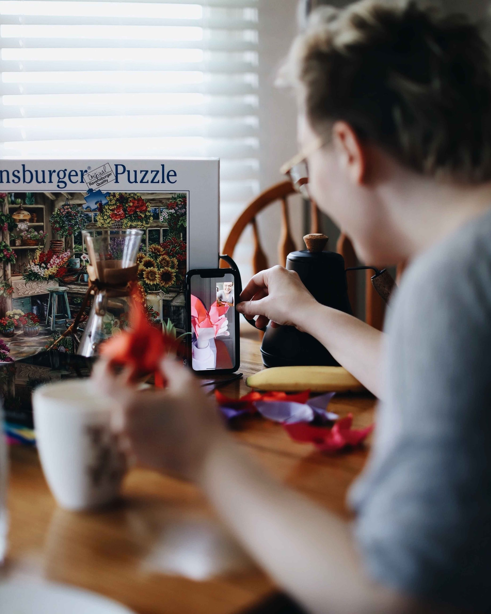

I enjoy music recommendations from apps or people.
Going to concerts- this April i'm going to Shygirl's, LETS GOO!!!
I guess my favorite type of music would be pop or hyper pop, but I like to keep my options open

"Chronically Online" aka "Rotting in my room"
This is a must if you have to study, but if you have a study group do that!
I know it's bad when TikTok gives me a lot of screen time warnings.
I don't always rot. I sometimes learn new subjects and practice them like working out, cooking, etc
Skin Care
During Covid, I as others, put self-care to the forefront and now I have a day and night time routine... I gate keep tho.
Jk, here is my list: Wash with a gentle cleanser, add your favorite hydrating toner while your face is still moist, a retinol or retin-A for the night, an acid for the day, and lock it in with Cetaphil lotion for the day or a cream for the night.
Oh, don't forget to wear sunscreen during the day!!!